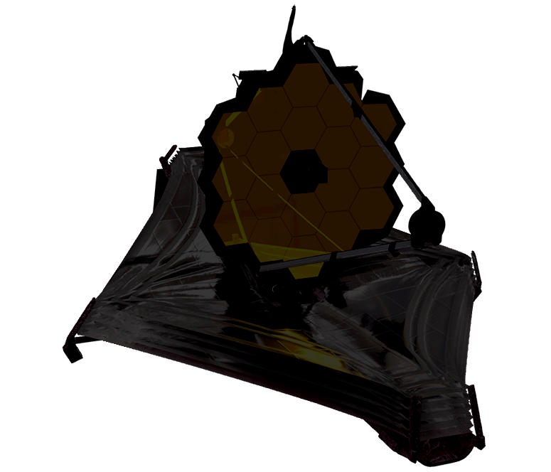
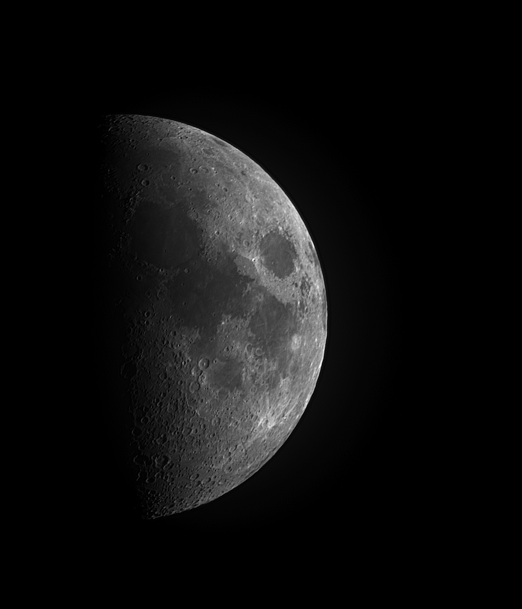
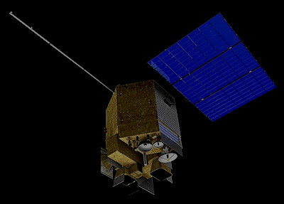
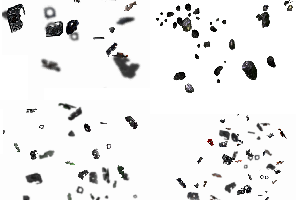
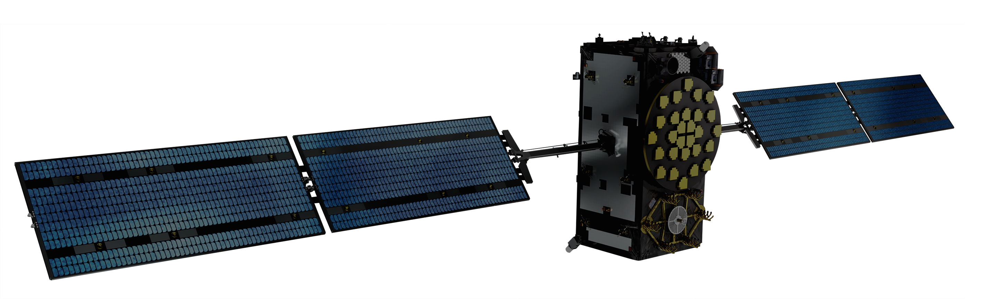
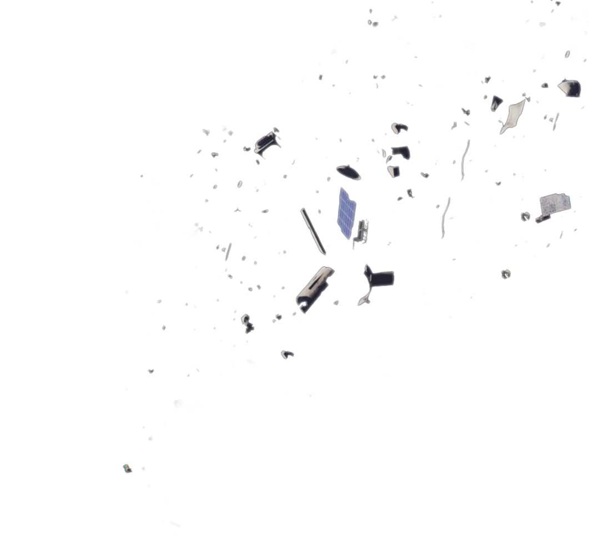
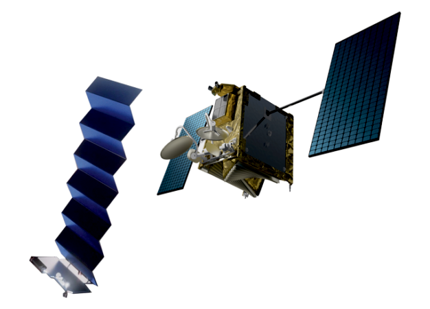
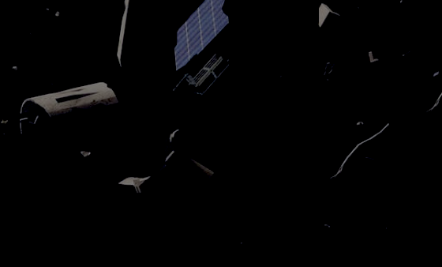
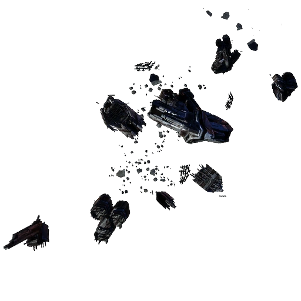
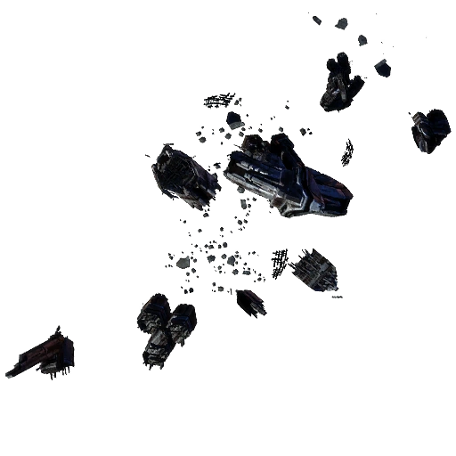

5,465
satellites currently orbiting Earth,
including their country of origin, purpose,
and other operational details.
This Website is to raise people's awareness of creating a system of sustainable satellites above us, with long time horizons.
Of the more than 26,000 debris objects NASA monitors, there are more than 4,000 dead satellites and rocket stages which could destroy working satellites and impact on our communications on Earth.
Then there are up to 900,000 fragments of space scrap up to 10cm big which are too small to monitor and 128 million tiny pieces up to 1cm big.
But even the smallest fragments circling Earth at 40,000km an hour could cause catastrophic damage to an active satellite, according to the European Space Agency’s Space Debris Office.
── 1,500,000 KM | James Webb Space Telescope
── 384,400 KM | The Moon
── 35,800 KM | Geostationary Orbit
── 35,786 KM | FengYun (FY-4A)
 New observations show we’re not tracking a majority of debris in higher orbits.
Debris in GEO accumulates over time, resulting from shedding or collision. Many old boosters used to place satellites in orbit simply break up over time. And unlike LEO, satellites in GEO are too far away to come back to Earth and burn up in its atmosphere.
-SKY&TELESCOPE
── 23,222 KM | Galileo Satellite Navigation System
── 16,500 KM | Medium Earth Orbit
On average over the last two decades, 12 accidental ‘fragmentations’ have occured in space every year – and this trend is unfortunately increasing. Fragmentation events describe moments in which debris is created due to collisions, explosions, electrical problems and even just the detachment of objects due to the harsh conditions in space.
-European Space Agency
── 2,000 KM | Low Earth Orbit
── 550 KM | Starlink Satellites
 NASA estimates that there would be a Starlink in every single asteroid survey image taken for planetary defense against hazardous asteroid impacts, decreasing asteroid survey effectiveness by rendering portions of images unusable,” the agency writes, saying the satellites would threaten “our planet’s ability to detect and possibly redirect a potentially catastrophic impact.
-NASA
── 400 KM | International Space Station
 

For almost 60 years, we’ve launched rockets and spacecraft into Earth’s orbit, but now thousands of objects from tiny screws and bolts, to dead satellites encircle the Earth. Transforming the space above us into a junkyard. The International Space Station(ISS) is in the crosshairs. The ISS has already been hit by little bits of debris on a number of occasions and there are no guarantees that other substantial things might not hit it again in the future.
-Discovery